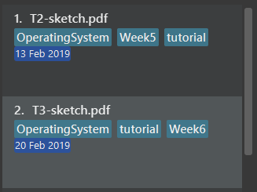
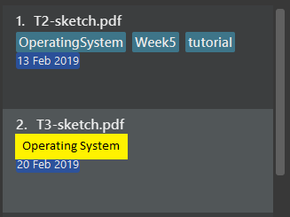

By: Team T12-4 Since: Feb 2019 Licence: MIT
1. Introduction
1.1. Software Overview
-
PDF++ is a all-in-one document management tool that allows users to easily manage and manipulate their files.
The current version of this application only deals with PDF files. -
There are many unique features to the application such as the ability to search within the content of files, merging several files togeter, setting of deadlines and many more. These features can be referred to within the Implementation Section of this document.
1.2. Developer Guide Usage
-
This document is for developers who aim to further improve upon the application or change it to suit the needs of your target audience.
-
Each feature and design component has its own sub-heading and can be referred through the links in the table-of-contents.
They contain sufficient diagrams and detailed explanations that will be extremely useful to you.
2. Setting up
This section will assist you in setting up the project for the first time in you computer. This will allow you to work on the application without any issue in the future.
2.1. Prerequisites
-
JDK
9or laterJDK 10on Windows will fail to run tests in headless mode due to a JavaFX bug. Windows developers are highly recommended to use JDK9. -
IntelliJ IDE
IntelliJ by default has Gradle and JavaFx plugins installed.
Do not disable them. If you have disabled them, go toFile>Settings>Pluginsto re-enable them.
2.2. Setting up the project in your computer
-
Fork this repo, and clone the fork to your computer
-
Open IntelliJ (if you are not in the welcome screen, click
File>Close Projectto close the existing project dialog first) -
Set up the correct JDK version for Gradle
-
Click
Configure>Project Defaults>Project Structure -
Click
New…and find the directory of the JDK
-
-
Click
Import Project -
Locate the
build.gradlefile and select it. ClickOK -
Click
Open as Project -
Click
OKto accept the default settings -
Open a console and run the command
gradlew processResources(Mac/Linux:./gradlew processResources). It should finish with theBUILD SUCCESSFULmessage.
This will generate all resources required by the application and tests. -
Open
MainWindow.javaand check for any code errors-
Due to an ongoing issue with some of the newer versions of IntelliJ, code errors may be detected even if the project can be built and run successfully
-
To resolve this, place your cursor over any of the code section highlighted in red. Press ALT+ENTER, and select
Add '--add-modules=…' to module compiler optionsfor each error
-
-
Repeat this for the test folder as well (e.g. check
HelpWindowTest.javafor code errors, and if so, resolve it the same way)
2.3. Verifying the setup
-
Run the
seedu.pdf.MainAppand try a few commands. -
Run the tests to ensure they all pass.
2.4. Configurations to do before writing code
2.4.1. Configuring the coding style
This project follows oss-generic coding standards. IntelliJ’s default style is mostly compliant with ours but it uses a different import order from ours. To rectify,
-
Go to
File>Settings…(Windows/Linux), orIntelliJ IDEA>Preferences…(macOS) -
Select
Editor>Code Style>Java -
Click on the
Importstab to set the order-
For
Class count to use import with '*'andNames count to use static import with '*': Set to999to prevent IntelliJ from contracting the import statements -
For
Import Layout: The order isimport static all other imports,import java.*,import javax.*,import org.*,import com.*,import all other imports. Add a<blank line>between eachimport
-
Optionally, you can follow the UsingCheckstyle.adoc document to configure Intellij to check style-compliance as you write code.
2.4.2. Setting up CI
Set up Travis to perform Continuous Integration (CI) for your fork. See UsingTravis.adoc to learn how to set it up.
After setting up Travis, you can optionally set up coverage reporting for your team fork (see UsingCoveralls.adoc).
| Coverage reporting could be useful for a team repository that hosts the final version but it is not that useful for your personal fork. |
Optionally, you can set up AppVeyor as a second CI (see UsingAppVeyor.adoc).
| Having both Travis and AppVeyor ensures your App works on both Unix-based platforms and Windows-based platforms (Travis is Unix-based and AppVeyor is Windows-based) |
2.4.3. Getting started with coding
When you are ready to start coding,
-
Get some sense of the overall design by reading Section 3.1, “Architecture”.
-
Take a look at Appendix A, Suggested Programming Tasks to Get Started.
3. Design
This section allows you to visualise the application in a top-down view, where you are able to see the general structure of the different components within PDF++.
3.1. Architecture
The Architecture Diagram given above explains the high-level design of the App. Given below is a quick overview of each component.
The .pptx or .xml files used to create diagrams in this document can be found in the
diagrams folder. To update a diagram, modify the diagram in
the pptx or xml file, select the objects of the diagram, and choose Save as picture.
|
Main has only one class called MainApp. It is responsible for,
-
At app launch: Initializes the components in the correct sequence, and connects them up with each other.
-
At shut down: Shuts down the components and invokes cleanup method where necessary.
Commons represents a collection of classes used by multiple other components.
The following class plays an important role at the architecture level:
-
LogsCenter: Used by many classes to write log messages to the App’s log file.
The rest of the App consists of four components.
Each of the four components
-
Defines its API in an
interfacewith the same name as the Component. -
Exposes its functionality using a
{Component Name}Managerclass.
For example, the Logic component (see the class diagram given below) defines it’s API in the Logic.java interface and exposes its functionality using the LogicManager.java class.

How the architecture components interact with each other
The Sequence Diagram below shows how the components interact with each other for the scenario where the user issues the command delete 1.
The sections below give more details of each component.
3.2. UI component
API : Ui.java
The UI consists of a MainWindow that is made up of parts e.g.CommandBox, ResultDisplay, PdfListPanel, StatusBarFooter, BrowserPanel etc. All these, including the MainWindow, inherit from the abstract UiPart class.
The UI component uses JavaFx UI framework. The layout of these UI parts are defined in matching .fxml files that are in the src/main/resources/view folder. For example, the layout of the MainWindow is specified in MainWindow.fxml
The UI component,
-
Executes user commands using the
Logiccomponent. -
Listens for changes to
Modeldata so that the UI can be updated with the modified data.
3.3. Logic component
API :
Logic.java
-
Logicuses thePdfBookParserclass to parse the user command. -
This results in a
Commandobject which is executed by theLogicManager. -
The command execution can affect the
Model(e.g. adding a pdf). -
The result of the command execution is encapsulated as a
CommandResultobject which is passed back to theUi. -
In addition, the
CommandResultobject can also instruct theUito perform certain actions, such as displaying help to the user.
Given below is the Sequence Diagram for interactions within the Logic component for the execute("delete 1") API call.
delete 1 Command3.4. Model component
API : Model.java
The Model,
-
stores a
UserPrefobject that represents the user’s preferences. -
stores the Pdf Book data.
-
exposes an unmodifiable
ObservableList<Pdf>that can be 'observed' e.g. the UI can be bound to this list so that the UI automatically updates when the data in the list change. -
does not depend on any of the other three components.
As a more OOP model, we can store a Tag list in Pdf Book, which Pdf can reference. This would allow Pdf Book to only require one Tag object per unique Tag, instead of each Pdf needing their own Tag object. An example of how such a model may look like is given below. |
The Pdf Class Diagram below shows the structure of the Pdf class, which is the most used class throughout the application.
3.5. Storage component
API : Storage.java
The Storage component,
-
can save
UserPrefobjects in json format and read it back. -
can save the Pdf Book data in json format and read it back.
3.6. Common classes
Classes used by multiple components are in the seedu.pdfbook.commons package.
4. Implementation
This section describes some noteworthy details on how certain features are implemented.
-
Items with
… after them can be used multiple times including zero times e.g.TAG…can be used asMyTag,TagA TagB TagCetc.
4.1. Add Feature
4.1.1. Current Implementation
This feature is facilitated by both the AddCommandParser and AddCommand. This feature adds the PDF file to the app using the path specified by your users. Other features such as the Section 4.3, “Rename Feature” and Section 4.2, “Open feature” can only be performed on files that are added to the application.
The AddCommandParser uses the prefixes defined in CliSyntax to identify the different types of arguments that are entered along with the
add command. These arguments will then be used to construct a new Pdf which will represent the Pdf to be added.
The implementation of the AddCommand execution can be summarised in the following activity diagram:
-
The current PdfBook Model is checked to determine if identical Pdf has already been added.
-
If such a Pdf already exists, a CommandException will be thrown and the execution will be ended.
-
-
The Pdf to be added is loaded into a third-party API to verify for any errors.
-
Pdf will be loaded as PDDocument, which verifies the file that the user wishes to add to the program.
-
Created PDDocument will be closed after loading as it is unused.
-
Errors in adding the Pdf would throw IOException. Errors would most likely be due to:
-
File not found at location
-
Lack of user permissions to open file
-
File has encryption
-
File corruption
-
-
Thrown IOException is intercepted, a CommandException will be thrown and the execution will be ended.
-
-
The Pdf is recorded in the Model and the changes are committed.
-
CommandResult is returned upon successful execution.
4.1.2. Considerations
The implementation design of this feature was built upon the original implementation used by the addressbook. As the application is primarily meant to be operated through the CLI, it was decided to continue using the same prefix for the command input to keep its consistency.
Due to handling of files, additional checks have to be added such as the use of
PDDocument
to ascertain that it is a .pdf file and that it can be used with Apache PDFBox® library API.
4.1.3. Future Implementation
Currently PDF++ only supports PDF files, any other types of files will not be accepted. As the goal of the application is to be the sole manager of files, the application will be upgraded to work with all files in v2.0.
4.2. Open feature
4.2.1. Current Implementation
The open feature is facilitated by both the OpenCommandParser and OpenCommand.
Essentially upon opening a Pdf that is tracked by the application, the user will be able to
execute the PDF with the operating system’s default PDF reader application.
The Open feature has the following syntax:
open <INDEX>
-
<INDEX>refers to the index of thePdfthat you wish to edit.
The index value can be referenced from the list in the main application, or from the
result of the Filter, Find or List feature.
|
4.2.2. Feature Breakdown
Illustrated below is a sample usage scenario that provides a clear view to the inner workings of the Open feature.
Step 1: The user launches an application with either an existing set of Pdf or a
new sample set of Pdf stored within as shown below.
Step 2: The user chooses a Pdf that they wish to open, in this case a.pdf, and
enters the open command into the CLI Interface, following the outlined Syntax as
illustrated below.
Step 3: Upon hitting enter to execute the command, the OpenCommandParser parses the input in the following method:
-
Extract the
INDEXthat is input that was entered by the user. -
Verify that it contains a valid integer.
-
This is done by initialising the
Indexobjects that verifies the above properties on instantiation. -
If the supplied parameter is invalid a
ParseExceptionis thrown and theopencommand is terminated.
-
-
Upon successfully parsing the input
Index, aOpenCommandobject is created with the relevant index and returned to theLogicManagerfor execution.
Step 4: The LogicManager attempts to execute the OpenCommand by supplying it the model and commandHistory.
Step 5: The OpenCommand checks that the supplied Index matches a Pdf in the model and sources for the
default application within the Operating System to open the file.
Step 6: Finally, the OpenCommand supplies the default application with the file-path of the Pdf to open
and returns a successful CommandResult to the LogicManager.
-
Should there be any issue with the parsing of the
Pdfdue to invalid directories or a corruptedPdffile, theCommandExceptionwill be thrown and theOpenCommandwill be terminated. A "Fail Message" will then be displayed to the user.
The implementation of the OpenCommand execution can be summarised in the following activity diagram:
| For more information about the behaviour of sourcing for the default application to open the Pdf, please refer to Java SE 9 class Desktop. |
4.3. Rename Feature
4.3.1. Current Implementation
The rename feature is facilitated by both the RenameCommandParser and RenameCommand.
Essentially upon adding a Pdf to be tracked by the application, the user will be able to
change certain attributes tied to the PDF such as the Name and tied to a particular Pdf.
4.4. Move feature
4.4.1. Current Implementation
The move feature is facilitated by both MoveCommand and MoveCommandParser.
This feature functions as a simplified version of Section 4.3, “Rename Feature”, as in nature
it is making an edit to the directory of the file. However, in addition to making changes
to the directory in the application storage, it also ensures that the directory changes
are reflected in the local filesystem.
The design consideration into separating move as a new command from edit factored in the purpose of the application; as a document manager, the term "edit" is synonymous with making content or characteristic changes when it is applied in the context of documents.
The Move feature has the following syntax:
move
move <INDEX> <NEWDIRECTORY>
-
<INDEX>refers to the index of the file that you wish to move. -
<NEWDIRECTORY>refers to the address of the new location the file is to be moved. -
Entering
movewithout<INDEX>or<NEWDIRECTORY>will open the default file selection GUI for the user to select the file directly.
The index value can be referenced from the list in the main application, or from the
result of the Filter, Find or List feature.
|
All parts of the syntax are required.
4.4.2. Feature breakdown
Illustrated below is a sample usage scenario that provides a clear view to the inner
workings of the move feature.
Step 1: From the main interface of the application, the user chooses a Pdf that
they wish to move, and enters the move command into the CLI Interface, following
the outlined Syntax as illustrated below.

In this scenario, there is a file document.pdf in the windows Desktop directory, and
the move command entered is intended for the file to be moved to the windows Documents
directory.
Step 2: After executing the command, the MoveCommandParser parses the input into
relevant objects that are required to be executed by the MoveCommand object. In
particular, it ensures that there are correctly two arguments passed as described in the
above Syntax. Upon parsing, the parser then creates a new MoveCommand that will execute
the user’s input.
Step 3: The MoveCommand is then executed. Successful execution of the command would return
a CommandResult object, while unsuccessful execution due to validation failure will throw
a CommandException.
.Move Command Activity Diagram
image::MoveCommandActivityDiagram.png[width="600"]
4.5. Merge feature
4.5.1. Current Implementation
The merge feature is facilitated by both MergeCommand and MergeCommandParser.
This feature utilises the
Apache PDFBox® library, specifically the
PDFMergerUtility
API to append two or more PDFs and create a new file with the merged content. As there will be one
additional file added to the application, this feature also implicitly performs Section 4.1, “Add Feature” to add the new
PDF to the application.
The implementation of the MergeCommand execution can be summarised in the following activity diagram:

-
The provided indices are checked to be valid i.e. referring to a specific Pdf in the PdfBook.
-
If there is at least one invalid index, a CommandException will be thrown and the execution will be ended.
-
-
The required Pdfs are retrieved from the PdfBook based on indices.
-
A File object is created for each Pdf which allows file operations to be performed on the Pdf.
-
PDFMergerUtility is created. The directory must be set for the merged file prior to merging, which also includes the name of the file. By default, the directory of the Pdf based on first index is used.
-
A unique name is created for the merged file and combined with the aforementioned directory to create the full directory for the merged file.
-
To avoid issues with duplicate name at the directory, the name is created based on hash code. The created name will also be verified unique at the directory - and changed if necessary.
-
-
The Files will be loaded as PDDocument, which is an indicator if the application can perform other operations on the Pdf that need it to be handled as a
.pdffile.-
Errors in accessing Pdf would throw IOException. Errors would most likely be due to:
-
File not found at location
-
Lack of user permissions to open file
-
File has encryption
-
File corruption
-
-
Thrown IOException is intercepted, a CommandException will be thrown and the execution will be ended.
-
-
The Files are added to the PDFMergerUtility.
-
Errors in adding to PDFMergerUtility would throw IOException. The cause for error would be similar to above.
-
Thrown IOException is intercepted, a CommandException will be thrown and the execution will be ended.
-
-
All loaded PDDocument are closed.
-
A new Pdf is created to represented the merged file created.
-
The Pdf is recorded in the Model and the changes are committed.
-
CommandResult is returned upon successful execution.
This sequence diagram demonstrates the interactions involved from start of MergeCommandParser to end of MergeCommand execution:
4.5.2. Considerations
The default directory of the merged file is currently set to the directory of the first index of the files to be merged. There were considerations to make flexibility in the merge command input to allow for the user to specify the desired directory of the merged file. As the current version of PDF++ is focused on a working product, it was decided to simplify the command to focus on the merge operation. Users can also make use of Section 4.4, “Move feature” to move the file; such implementation is more intuitive if the user is going to be using the application for everyday needs.
For the merging of files, the current implementation involves adding all files to a single PDFMergerUtility to merge together. One alternative to merging multiple files would be to create a separate PDFMergerUtility for every pair of files and merge the content recursively into a final merged file. The advantage of this would be better stability in performance when merging multiple large files as there will be lesser workload on each PDFMergerUtility. However, this would undoubtedly cause the performance to be slower as more merge operations are done overall. As the case of instability occurs only in very large files, it was decided to go with focus on performance.
4.5.3. Future Implementation
There are performance issues encountered when performing the merge operations with many files of large size. In future versions, the merge operation has to not only ensure performance but stability as well. By v2.0, the merging will be able to support larger files without any concern for the application to freeze or crash while merging. Currently, there are no means to make the merging operation perform faster due to the merging operation being performed through the PDFMergerUtility API.
4.6. Delete feature
4.6.1. Current Implementation
The delete feature is facilitated by both DeleteCommand and DeleteCommandParser.
This feature performs either a soft or hard remove operation on a file in the application
based on the index provided.
The implementation of the DeleteCommand execution can be summarised in the following activity diagram:
-
Soft delete is defined as removing a file from the application but not from the local filesystem; the physical file is left intact within the user’s operating system, but the user will not be able to access or use the features of the application on said file - unless it is added back to the application.
-
Hard delete is defined as removing a file both from the application and the local filesystem; the physical file will be deleted and the user will not be able to access or perform any operations on the file, either through the application or through the user’s operating system.
| As of v1.4 there is no way to completely undo the hard delete operation. When the file is deleted from the filesystem, it is permanently erased. Even the [Undo/Redo feature] cannot help with this… |
The delete feature has the following syntax:
delete <INDEX>
delete <INDEX> hard
-
<INDEX>refers to the index of the file in the list that you wish to perform theactionon. -
If the keyword
hardis not specified, the soft delete operation will be performed. Otherwise, the hard delete operation will be performed.
The index value can be referenced from the list in the main application, or from the
result of the Filter, Find or List feature.
|
4.6.2. Feature breakdown
Illustrated below is a sample usage scenario that provides a clear view to the inner
workings of the delete feature.
Step 1: From the main interface, the user chooses a file that they wish to delete, and
enters the delete command into the CLI Interface, following the outlined Syntax mentioned.
Step 2: Upon hitting enter to execute the command, the DeleteCommandParser parses the input into relevant objects that are required to be executed by the DeleteCommand object. Upon parsing, the parser then creates a new DeleteCommand that will execute the user’s input.
Step 3: The DeleteCommand is then executed. Successful execution will return a CommandResult indicating that the changes has been made.
4.7. Clear feature
4.7.1. Current Implementation
The clear feature is facilitated by both ClearCommand and ClearCommandParser.
This features removes all the PDF files that were previously stored in PDF++. It is similar to
the Section 4.6, “Delete feature” in that it removes files from the application, with multiple files instead of
one at a time. However, it differs that it does not have the option to delete the file from the local
filesystem.
The Clear feature has to following syntax:
clear
-
The
clearcommand will be executed regardless if there is any invalid text that comes after the command -
All files will be removed from the application, but not from the local filesystem.
Since the clear feature is very easily executed, if you have accidentally entered the clear command and
wish to revert the action, please refer to [Undo/Redo feature] for more information.
|
4.8. Deadline feature
4.8.1. Current Implementation
The deadline feature is facilitated by both Deadline, DeadlineCommand and DeadlineCommandParser
This feature allows you to set or remove deadlines of the file specified by you from PDF++.
The deadlines will be recorded and displayed both in the list of files as well as in the information panel
for each individual file.
The implementation of the Deadline model can be represented in the following class diagram:
A Deadline model has a Java.time.LocalDate
date attribute and a boolean isDone. The date is the date for the deadline assigned to the file, the isDone attribute
evaluates to true if the deadline is set to be done, false if it is not done.
The implementation of the DeadlineCommand execution can be summarised in the following activity diagram:
-
The provided index is checked to be valid i.e. referring to a specific Pdf in the PdfBook.
-
If the index is invalid, a CommandException will be thrown and the execution will be ended.
-
-
The required Pdf is retrieved from the PdfBook based on the index.
-
A duplicate Pdf of the required Pdf is created.
-
For cases of assigning a new deadline,
-
The duplicate Pdf is assigned with new deadline attributes.
-
-
For cases of setting an existing deadline as done or removed,
-
The existing deadline from the retrieved Pdf is tested to be a valid deadline.
-
If the existing deadline is a valid deadline, the duplicate Pdf is assigned with new deadline attributes.
-
If the existing deadline is not a valid deadline, a CommandException will be thrown and the execution will be ended.
-
-
-
The duplicate Pdf with new deadline attributes is recorded in the Model and the changes are committed.
-
CommandResult is returned upon successful execution.
This sequence diagram demonstrates the interactions involved from start of DeadlineCommandParser to end of DeadlineCommand execution:
deadline 1 done Command| After a deadline has been added to the PDF file specified, the date will be color coded according to days remaining from the current day until the deadline date. |
4.8.2. Considerations
There are some discrepancy for the representation of a file without a deadline in the Jackson adapted storage and the Pdf book model. In the Pdf book model, files without a deadline will be assigned with the default deadline whereas the date is set to LocalDate.MIN. In the Jackson adapted storage, we simply set the deadline attribute of a file without a deadline as empty. In our previous implementation, we used to assign the default date LocalDate.MIN to the deadline attribute in the Jackson adapted Storage as well, however this might confuse the users if they read the pdfplusplus.json and find out the non-existence deadline. Besides, this implementation also makes the displaying process of deadlines through the UI tedious.
In order to comply with the two distinct representation of deadline model, we implemented a default deadline toString method that
prints the Pdf book model version, and a modified toJsonString that prints the Jackson adapted storage version of deadline.
4.8.3. Future Implementation
Our current color coded deadlines is predefined based on the due date from the current date. Suggested improvement for this area would be providing user-defined color codes for a better user experience of our application.
4.9. Help feature
4.9.1. Current Implementation
The help feature brings up the UserGuide in a browser window as a html file. Following other
features, the command is parsed and a HelpCommand object is created to be executed.
The help feature has to following syntax:
help
After execution, the user will be directed to the start of the UserGuide.adoc as shown. Users can reference from the UserGuide directly on how to navigate the guide.

4.10. Exit feature
4.10.1. Current Implementation
The exit feature is facilitated by ExitCommand. This feature allows you to exit from PDF++.
The exit feature has to following syntax:
exit…
-
The
exitcommand will be executed regardless if there is any invalid text that comes after the command
| Your files and commands are immediately stored after execution, and can be retrieved on reopening the application. |
4.11. List feature
4.11.1. Current Implementation
The list feature is facilitated by ListCommand. This feature will display all of the files currently stored within the application at the main interface. By default, all of the files will be displayed when the application is started. However, the display of the interface can be changed to reflect the results of Find feature or Filter feature.
Certain features such as Merge Feature rely on the index of the file(s) displayed on
the main interface. Since the find or filter feature would list a sample of all
the files at the main interface, no commands can be executed on the files not included in
the results. Hence, the list feature is added to allow for a "reset" of the view of the files.
|
The List feature has to following syntax:
list
4.12. Find feature
4.12.1. Current Implementation
The find feature is facilitated by FindCommand and FindCommandParser.
This feature lists a subset of all the files in the application based on the keyword(s)
provided. Using the keyword(s), the application will check the names of all files, as
well as the content of the text within the files prior to revealing the results.
The find feature has the following syntax:
Format: find <KEYWORD> …
-
<KEYWORD>refers to the word that the application will use as reference a to find files. There must be at least one provided.
Example:
* find Resume
* find Introduction
4.12.2. Feature Breakdown

The following image briefly summarises the interactions of the find command with
some of its immediate components.

When the user enters the CLI Input for the find command, the command is first passed
from the LogicManager to the PdfBookParser will carry out the following steps.
-
The user inputs a request to
finda keyword within the files of the application. e.g.find keyword. -
The
PdfBookParsercreates a newFindCommandParserupon recognising that the user wishes to use thefindfeature. -
Parse method within the
FindCommandParserwould create aNameContainsKeywordPredicatewhich will allow theModelto filter its list of files to show the user the requested files. -
Finally, the
FindCommandobject is returned to theLogicManager.
Upon receiving the FindCommand from the PdfBookParser the following steps are carried out.
-
The
executemethod is invoked from theLogicManagerwith the parameters ofmodelandhistory. -
The
modelthen uses theNameContainsKeywordPredicateand runs thetestmethod to check each file and verify that it fulfils the predicate. This is so that themodelcan update itself to present the list of files that the user wishes to view. -
The
testmethod invokes classes from the external Apache PDFBox library, namelyPDDocumentandPDFTextStripperto extract the contents of the existing files. -
The extracted content is then checked to verify if it contains the
keywordinput by the user. -
Further checks are also done to confirm if each file’s name contains the
keywordas well. -
The
modelthen updates itself and stores the current actiion in thehistoryobject. -
Finally, the
FindCommandreturns aCommandResultback to theLogicManagerfor follow up action.
This is a brief explanation of the inner workings of the FindCommmand and its execution method.
4.12.3. Considerations
Our application also implements several security features such as the ability of users to Encrypt and
Decrypt their files. Hence, a major security concern was to prevent the FindCommand from searching
through the contents of files that are previously encrypted. This is crucial to prevent the leakage of data
as malicious users might simply utilize the FindCommand to extract information from the tracked files.
4.12.4. Future Implementation
-
The main issue with the current implementation of the
FindCommandis its slow speeds with respect to large files or files that contain a large string of text files. Hence, a possible consideration you might wish to improve upon is to "upgrade" this feature by improving its speed of this feature. -
Yet another enhancement to this feature you might wish to implement is the use of Optical Image Recognition, otherwise known as OCR. This will allow the application to translate images within the file to words which would further improve the ability of the application to look through content even if they are images.
4.13. Filter feature
4.13.1. Current Implementation
The filter feature is facilitated by FilterCommand and FilterCommandParser.
This feature is similar to Find feature in that it lists a subset of all the files
in the application, except that it will list the files based on the tag of the file.
The filter feature has to following syntax:
Format: filter t/<TAG> …
-
<TAG>refers to a tag that is valid, i.e. a tag that was previously set on a file. -
All tags need to have the prefix /t to differentiate between each tag.
4.13.2. Feature Breakdown
The inner workings of FilterCommand can be explained in the following steps should you need to modify it.
Given that they are extremely similar to that of the Find Feature, you may refer to that should
you need more information.
-
The
LogicManagercomponent invokes aPdfBookParserto parse the input command.-
An input command such as
filter t/school t/lecture.
-
-
The
PdfBookParserthen decodes the instruction by identifying the keyword, which isselectand creates a newFilterCommandParserto parse the necessary parameters.-
These parameters are mainly each tag specified as
t/TAG -
The
FilterCommandParsercreates a predicateTagContainsKeywordsPredicatewhich tests each file if it contains the specified tags.
-
-
The
FilterCommandParserthen parses the parameter,FilterCommandobject that is returned to theLogicManagerto execute. -
The
LogicManagersupplies theFilterCommandwith the existing applicationmodelandcommand historyand executes it. -
The execution of the
FilterCommandmainly contains the following step.-
Provides
modelwith the newly formedTagContainsKeyworkdsPredicateto update the list of files with only those that contain the input tags. -
This change causes the invocation of the
UIcomponent to display the selected item to the user.
-
-
Finally, upon successful execution, a
CommandResultis returned to theLogicManagerfor other operations.-
If any errors occur mid-execution, a
CommandExceptionis thrown. These errors may occur due to:-
Invalid parameter inputs.
-
-
4.14. Select feature
4.14.1. Current Implementation
The select feature is facilitated by SelectCommand and SelectCommandParser. This allows users to select a file and view
more information pertaining to that selected file. They are able to view features such as its size,
any deadlines assigned to it, its name, and directory.
The Select feature has to following syntax:
Format: select INDEX
4.14.2. Feature Breakdown
The inner workings of SelectCommand can be explained in the following steps should you need to modify it.
-
The
LogicManagercomponent invokes aPdfBookParserto parse the input command.-
An input command such as
select 1.
-
-
The
PdfBookParserthen decodes the instruction by identifying the keyword, which isselectand creates a newSelectCommandParserto parse the necessary parameters. -
The
SelectCommandParserthen parses the parameter, in this case1and creates a newSelectCommandobject that is returned to theLogicManagerto execute. -
The
LogicManagersupplies theSelectCommandwith the existing applicationmodelandcommand historyand executes it. -
The execution of the
SelectCommandsets theselectedPdfproperty of the model.-
This change causes the invocation of the
UIcomponent to display the selected item to the user.
-
-
Finally, upon successful execution, a
CommandResultis returned to theLogicManagerfor other operations.-
If any errors occur mid-execution, a
CommandExceptionis thrown. These errors may occur due to:-
Invalid parameter inputs.
-
-
4.15. Sort feature
4.15.1. Current Implementation
The sort feature is facilitated by SortCommand and SortCommandParser.
The sort command allows the user to arrange the list of files tracked by the application in a specified order & criteria.
The order can be ascending (up) or descending (down) while the criteria can be name, deadline or size.
The Sort feature has to following syntax:
Format: sort CRITERIA ORDER
Example:
-
sort deadline up -
sort name down
4.15.2. Feature Breakdown
Listed below is a brief explanation of the inner workings of the sort feature.
-
The
LogicManagercomponent invokes aPdfBookParserto parse the input command.-
An input command such as
sort deadline up.
-
-
The
PdfBookParserthen decodes the instruction by identifying the keyword, which isselectand creates a newSortCommandParserto parse the necessary parameters. -
The
SortCommandParserthen parses both parameters and creates aSortCommandobject that is returned to theLogicManagerto execute.-
The parameters are the
CRITERIAandORDERspecified by the user.
-
-
The
LogicManagersupplies theSortCommandwith the existing applicationmodelandcommand historyand executes it. -
The execution of the
SortCommandcontain the following steps:-
The list of existing files are obtained from the
Modelcomponent -
This list is sorted with the given
CRITERIAandORDER. -
The sorted list is set as the new default list of the
Modelcomponent.
-
-
This change causes the invocation of the
UIcomponent to display the new list of files to the user. -
Finally, upon successful execution, a
CommandResultis returned to theLogicManagerfor other operations.-
If any errors occur mid-execution, a
CommandExceptionis thrown. These errors may occur due to:-
Invalid parameter inputs such as invalid
CRITERIAorORDER.
-
-
All other operations carried out after sort that require an INDEX to be supplied must follow the newly
set indexes of the files tracked by the application.
|
4.16. Tag feature
4.16.1. Current Implementation
The tag feature is facilitated by TagCommand and the TagCommandParser.
This allows users to set tags to files that are tracked by the application that allows them to easily organize and
view these files with other operations supported by our application such as the Filter Feature.
In order to perform the Tag Command the user needs to specify a PREFX that is denoted by -a or r to signify the
addition or removal of a tag. The INDEX that refers to the file that the user wishes to interact with and the tags
themselves that are represented in the t/TAG format where TAG text that the user wishes to use as a tag.
The Tag feature has to following syntax:
Format: tag PREFIX INDEX t/TAG…
Example:
* tag 1 -a t/SEROCKS
* tag 1 -r t/SEROCKS
* tag 2 -a t/Urgent t/Resume
4.16.2. Feature Breakdown
The inner workings of TagCommand can be briefly explained in the following steps should you need to modify it.
-
The
LogicManagercomponent invokes aPdfBookParserto parse the input command.-
An input command such as
tag 1 -a t/SEROCKS.
-
-
The
PdfBookParserthen decodes the instruction by identifying the keyword, which isselectand creates a newTagCommandParserto parse the necessary parameters. -
The
TagCommandParserthen parses the relevant parameters and creates a newSortCommandobject that is returned to theLogicManagerto execute. The parsed parameters include:-
PREFIXwhich, as mentioned above, indicates if the tag is to be added or removed from the file. -
INDEXwhich indicates to the command which file that the user wishes to interact with. -
t/TAGwhich contain the name of the tag(s) that the user wishes to add to the specified file.
-
-
The
LogicManagersupplies theTagCommandwith the existing applicationmodelandcommand historyand executes it. -
The execution of the
TagCommandcontain the following steps:-
The file that the user wishes to add the tags to is obtained from the
model. -
The parsed
tag(s)are added to the chosen file. -
The
modelis then updated with the newly modified file. -
Changes are reflected in the
UIcomponent by new labels forming under the name of the file.
-
-
Finally, upon successful execution, a
CommandResultis returned to theLogicManagerfor other operations.-
If any errors occur mid-execution, a
CommandExceptionis thrown. These errors may occur due to:-
Invalid parameter inputs.
-
-
The Tag Feature only allows for tags that do not contain spaces and are alphanumeric.
|
4.17. History feature
4.17.1. Current Implementation
The history feature is facilitated by HistoryCommand.
This feature displays the previous commands entered since the start of the current session
of the application; each time the application is closed, the command history will be erased.
The history feature has to following syntax:
history
-
When there is no command history, a message will be shown to notify the user.
4.18. Undo/Redo feature [Coming in v2.0]
4.18.1. Current Implementation
The undo/redo mechanism is facilitated by VersionedPdfBook.
It extends PdfBook with an undo/redo history, stored internally as an pdfBookStateList and currentStatePointer.
Additionally, it implements the following operations:
-
VersionedPdfBook#commit()— Saves the current pdf book state in its history. -
VersionedPdfBook#undo()— Restores the previous pdf book state from its history. -
VersionedPdfBook#redo()— Restores a previously undone pdf book state from its history.
These operations are exposed in the Model interface as Model#commitPdfBook(), Model#undoPdfBook() and Model#redoPdfBook() respectively.
Given below is an example usage scenario and how the undo/redo mechanism behaves at each step.
Step 1. The user launches the application for the first time. The VersionedPdfBook will be initialized with the initial pdf book state, and the currentStatePointer pointing to that single pdf book state.
Step 2. The user executes delete 5 command to delete the 5th pdf in the pdf book. The delete command calls Model#commitPdfBook(), causing the modified state of the pdf book after the delete 5 command executes to be saved in the pdfBookStateList, and the currentStatePointer is shifted to the newly inserted pdf book state.
Step 3. The user executes add n/David … to add a new pdf. The add command also calls Model#commitPdfBook(), causing another modified pdf book state to be saved into the pdfBookStateList.
If a command fails its execution, it will not call Model#commitPdfBook(), so the pdf book state will not be saved into the pdfBookStateList.
|
Step 4. The user now decides that adding the pdf was a mistake, and decides to undo that action by executing the undo command. The undo command will call Model#undoPdfBook(), which will shift the currentStatePointer once to the left, pointing it to the previous pdf book state, and restores the pdf book to that state.
If the currentStatePointer is at index 0, pointing to the initial pdf book state, then there are no previous pdf book states to restore. The undo command uses Model#canUndoPdfBook() to check if this is the case. If so, it will return an error to the user rather than attempting to perform the undo.
|
The following sequence diagram shows how the undo operation works:
The redo command does the opposite — it calls Model#redoPdfBook(), which shifts the currentStatePointer once to the right, pointing to the previously undone state, and restores the pdf book to that state.
If the currentStatePointer is at index pdfBookStateList.size() - 1, pointing to the latest pdf book state, then there are no undone pdf book states to restore. The redo command uses Model#canRedoPdfBook() to check if this is the case. If so, it will return an error to the user rather than attempting to perform the redo.
|
Step 5. The user then decides to execute the command list. Commands that do not modify the pdf book, such as list, will usually not call Model#commitPdfBook(), Model#undoPdfBook() or Model#redoPdfBook(). Thus, the pdfBookStateList remains unchanged.
Step 6. The user executes clear, which calls Model#commitPdfBook(). Since the currentStatePointer is not pointing at the end of the pdfBookStateList, all pdf book states after the currentStatePointer will be purged. We designed it this way because it no longer makes sense to redo the add n/David … command. This is the behavior that most modern desktop applications follow.
The following activity diagram summarizes what happens when a user executes a new command:
4.18.2. Design Considerations
Aspect: How undo & redo executes
-
Alternative 1 (current choice): Saves the entire pdf book.
-
Pros: Easy to implement.
-
Cons: May have performance issues in terms of memory usage.
-
-
Alternative 2: Individual command knows how to undo/redo by itself.
-
Pros: Will use less memory (e.g. for
delete, just save the pdf being deleted). -
Cons: We must ensure that the implementation of each individual command are correct.
-
Aspect: Data structure to support the undo/redo commands
-
Alternative 1 (current choice): Use a list to store the history of pdf book states.
-
Pros: Easy for new Computer Science student undergraduates to understand, who are likely to be the new incoming developers of our project.
-
Cons: Logic is duplicated twice. For example, when a new command is executed, we must remember to update both
HistoryManagerandVersionedPdfBook.
-
-
Alternative 2: Use
HistoryManagerfor undo/redo-
Pros: We do not need to maintain a separate list, and just reuse what is already in the codebase.
-
Cons: Requires dealing with commands that have already been undone: We must remember to skip these commands. Violates Single Responsibility Principle and Separation of Concerns as
HistoryManagernow needs to do two different things.
-
4.19. File Protection
PDF++ has a robust in-built file protection system which allows you to encrypt or decrypt any PDF files you want. These features utilises the Apache PDFBox® library, specifically the PDDocument, AccessPermission, and StandardProtectionPolicy.
An [encrypted-file] is a file that is protected with a password. The terms protect and encrypt will be used interchangeably.
|
You can visit Section 4.19.1, “Encryption feature” and Section 4.19.2, “Decryption feature” to understand more about the respective feature.
4.19.1. Encryption feature
Current Implementation
The encrypt feature is facilitated by both EncryptCommand and EncryptCommandParser.
The implementation of the EncryptCommand execution is summarised in the following activity diagram:
-
The provided index is checked for validity i.e. referring to a specific Pdf in PdfBook.
-
If the index is invalid, a CommandException will be thrown and the execution ends.
-
-
The Pdf specified via the index is retrieved from the PdfBook.
-
A
Fileobject is created for the Pdf. -
The
Filewill be loaded as PDDocument, which is an indicator that theFileis a PDF document that is uncorrupted and not protected with a password.-
Error in loading Pdf as PDDocument would throw an IOException. Common reasons of error are:
-
File not found in location
-
Lack of user permissions to open File
-
Protected File
-
Corrupted File
-
-
Thrown IOException is intercepted, a CommandException will be thrown and the execution ends.
-
-
AccessPermission, and StandardProtectionPolicy are created. The password specified will be passed to
StandardProtectionPolicyfor the purpose of setting security settings for thePDDocument. -
A protected Pdf will be saved and closed.
-
Error in encrypting the file will throw an IOException. Common reasons of error are:
-
Excessive long password
-
Empty password
-
-
Thrown IOException is intercepted, a CommandException will be thrown and the execution ends.
-
-
The Pdf is recorded in the Section 3.4, “Model component” and the changes are saved.
-
A CommandResult is returned upon successful exception of EncryptCommand.
This sequence diagram demonstrates the [main-success-scenario] from the LogicManager to the end of EncryptCommand execution:
Edit password of an encrypted file
-
Alternative 1 (current choice): Execute DecryptCommand then EncryptCommand
-
Due to security reasons, it was decided to focus on encrypting an unprotected Pdf. You will need to use Section 4.19.2, “Decryption feature” before encrypting it with a new password. This is to ensure your intent in changing the password, as the current version PDF++ does not support
Forget Passwordfeature. -
However, this process is inefficient as you will need to enter 2 commands instead of 1.
-
-
Alternative 2: Change password of an encrypted file
-
This minimised the number of commands to be executed, but there are several security concerns as mentioned above.
-
A sophisticated protection system
-
Multiple adjustments to protect your interest
-
Section 4.17, “History feature” will not show the executed
EncryptCommandwhich includes the password of the file. -
The Section 4.18, “Undo/Redo feature [Coming in v2.0]” is temporarily disabled until a solution that will not comprise your privacy has been found.
-
Pressing up in the command box will not show the
EncryptCommandthat was previously executed.
-
Future Implementation
There are concerns of accidental encryption of a file with a wrong password. In PDF++ v2.0, the EncryptCommand will prompt you to re-enter the password as a form of confirmation message. If there is a mismatch of the two passwords entered, the command will not be executed.
4.19.2. Decryption feature
Current Implementation
The current Implementation of DecryptCommand is very similar to Section 4.19.1, “Encryption feature”.
The part where it is implemented differently will be specifically marked with a * for your convenience.
|
The decrypt feature is facilitated by both DecryptCommand and DecryptCommandParser.
The implementation of the DecryptCommand execution is summarised in the following activity diagram.
-
The provided index is checked for validity i.e. referring to a specific Pdf in PdfBook.
-
If the index is invalid, a CommandException will be thrown and the execution ends.
-
-
The Pdf specified via the index is retrieved from the PdfBook.
-
A
Fileobject is created for the Pdf. -
The
Filewill be loaded as PDDocument with the specified password, which is an indicator that theFileis a PDF document that is uncorrupted, protected and the password provided is valid *.-
Error in loading Pdf as PDDocument would throw an IOException and invalid password would throw an CommandException. Common reasons of error are:
-
File not found in location
-
Lack of user permissions to open File
-
Unprotected File *
-
Corrupted File
-
Wrong password *
-
-
Thrown IOException is intercepted, a CommandException will be thrown and the execution ends.
-
-
Upon success loading of the PDDocument, the security will be removed. *
-
An unprotected * Pdf will be saved and closed.
-
The Pdf is recorded in the Section 3.4, “Model component” and the changes are saved.
-
A CommandResult is returned upon successful exception of DecryptCommand.
This sequence diagram demonstrates the [main-success-scenario] from the LogicManager to the end of DecryptCommand execution:
A sophisticated protection system
-
Multiple adjustments to protect your interest
-
Section 4.17, “History feature” will not show the executed
EncryptCommandwhich includes the password of the file. -
The Section 4.18, “Undo/Redo feature [Coming in v2.0]” is temporarily disabled until a solution that will not comprise your privacy has been found.
-
Pressing up in the command box will not show the
EncryptCommandthat was previously executed.
-
Future Implementation
If an unauthorised personnel obtained the password of your files through illegal means, they can potentially set the file with a new password. This will hinder your access to your files.
However, With 2-Factor Authentication, there is an additional layer of protection that prevents these personnel from changing the passwords of your files. This ensures that only you/any authorised personnel can decrypt your files.
In PDF++ v2.0, the DecryptCommand will support for the 2FA feature as mentioned above. If this feature is highly demanded, this feature will be implemented to EncryptCommand too.
4.20. Logging
We are using java.util.logging package for logging. The LogsCenter class is used to manage the logging levels and logging destinations.
-
The logging level can be controlled using the
logLevelsetting in the configuration file (See Section 4.21, “Configuration”) -
The
Loggerfor a class can be obtained usingLogsCenter.getLogger(Class)which will log messages according to the specified logging level -
Currently log messages are output through:
Consoleand to a.logfile.
Logging Levels
-
SEVERE: Critical problem detected which may possibly cause the termination of the application -
WARNING: Can continue, but with caution -
INFO: Information showing the noteworthy actions by the App -
FINE: Details that is not usually noteworthy but may be useful in debugging e.g. print the actual list instead of just its size
4.21. Configuration
Certain properties of the application can be controlled (e.g user prefs file directory, logging level) through the configuration file (default: config.json).
5. Documentation
We use asciidoc for writing documentation.
| We chose asciidoc over Markdown because asciidoc, although a bit more complex than Markdown, provides more flexibility in formatting. |
5.1. Editing Documentation
See UsingGradle.adoc to learn how to render .adoc files locally to preview the end result of your edits.
Alternatively, you can download the AsciiDoc plugin for IntelliJ, which allows you to preview the changes you have made to your .adoc files in real-time.
5.2. Publishing Documentation
See UsingTravis.adoc to learn how to deploy GitHub Pages using Travis.
5.3. Converting Documentation to PDF format
We use Google Chrome for converting documentation to PDF format, as Chrome’s PDF engine preserves hyperlinks used in webpages.
Here are the steps to convert the project documentation files to PDF format.
-
Follow the instructions in UsingGradle.adoc to convert the AsciiDoc files in the
docs/directory to HTML format. -
Go to your generated HTML files in the
build/docsfolder, right click on them and selectOpen with→Google Chrome. -
Within Chrome, click on the
Printoption in Chrome’s menu. -
Set the destination to
Save as PDF, then clickSaveto save a copy of the file in PDF format. For best results, use the settings indicated in the screenshot below.

5.4. Site-wide Documentation Settings
The build.gradle file specifies some project-specific asciidoc attributes which affects how all documentation files within this project are rendered.
Attributes left unset in the build.gradle file will use their default value, if any.
|
| Attribute name | Description | Default value |
|---|---|---|
|
The name of the website. If set, the name will be displayed near the top of the page. |
not set |
|
URL to the site’s repository on GitHub. Setting this will add a "View on GitHub" link in the navigation bar. |
not set |
|
Define this attribute if the project is an official SE-EDU project. This will render the SE-EDU navigation bar at the top of the page, and add some SE-EDU-specific navigation items. |
not set |
5.5. Per-file Documentation Settings
Each .adoc file may also specify some file-specific asciidoc attributes which affects how the file is rendered.
Asciidoctor’s built-in attributes may be specified and used as well.
Attributes left unset in .adoc files will use their default value, if any.
|
| Attribute name | Description | Default value |
|---|---|---|
|
Site section that the document belongs to.
This will cause the associated item in the navigation bar to be highlighted.
One of: * Official SE-EDU projects only |
not set |
|
Set this attribute to remove the site navigation bar. |
not set |
5.6. Site Template
The files in docs/stylesheets are the CSS stylesheets of the site.
You can modify them to change some properties of the site’s design.
The files in docs/templates controls the rendering of .adoc files into HTML5.
These template files are written in a mixture of Ruby and Slim.
|
Modifying the template files in |
6. Testing
6.1. Running Tests
There are three ways to run tests.
| The most reliable way to run tests is the 3rd one. The first two methods might fail some GUI tests due to platform/resolution-specific idiosyncrasies. |
Method 1: Using IntelliJ JUnit test runner
-
To run all tests, right-click on the
src/test/javafolder and chooseRun 'All Tests' -
To run a subset of tests, you can right-click on a test package, test class, or a test and choose
Run 'ABC'
Method 2: Using Gradle
-
Open a console and run the command
gradlew clean allTests(Mac/Linux:./gradlew clean allTests)
| See UsingGradle.adoc for more info on how to run tests using Gradle. |
Method 3: Using Gradle (headless)
Thanks to the TestFX library we use, our GUI tests can be run in the headless mode. In the headless mode, GUI tests do not show up on the screen. That means the developer can do other things on the Computer while the tests are running.
To run tests in headless mode, open a console and run the command gradlew clean headless allTests (Mac/Linux: ./gradlew clean headless allTests)
6.2. Types of tests
We have two types of tests:
-
GUI Tests - These are tests involving the GUI. They include,
-
System Tests that test the entire App by simulating user actions on the GUI. These are in the
systemtestspackage. -
Unit tests that test the individual components. These are in
seedu.pdf.uipackage.
-
-
Non-GUI Tests - These are tests not involving the GUI. They include,
-
Unit tests targeting the lowest level methods/classes.
e.g.seedu.pdf.commons.StringUtilTest -
Integration tests that are checking the integration of multiple code units (those code units are assumed to be working).
e.g.seedu.pdf.storage.StorageManagerTest -
Hybrids of unit and integration tests. These test are checking multiple code units as well as how the are connected together.
e.g.seedu.pdf.logic.LogicManagerTest
-
6.3. Troubleshooting Testing
Problem: HelpWindowTest fails with a NullPointerException.
-
Reason: One of its dependencies,
HelpWindow.htmlinsrc/main/resources/docsis missing. -
Solution: Execute Gradle task
processResources.
7. Dev Ops
7.1. Build Automation
See UsingGradle.adoc to learn how to use Gradle for build automation.
7.2. Continuous Integration
We use Travis CI and AppVeyor to perform Continuous Integration on our projects. See UsingTravis.adoc and UsingAppVeyor.adoc for more details.
7.3. Coverage Reporting
We use Coveralls to track the code coverage of our projects. See UsingCoveralls.adoc for more details.
7.4. Documentation Previews
When a pull request has changes to asciidoc files, you can use Netlify to see a preview of how the HTML version of those asciidoc files will look like when the pull request is merged. See UsingNetlify.adoc for more details.
7.5. Making a Release
Here are the steps to create a new release.
-
Update the version number in
MainApp.java. -
Generate a JAR file using Gradle.
-
Tag the repo with the version number. e.g.
v0.1 -
Create a new release using GitHub and upload the JAR file you created.
7.6. Managing Dependencies
A project often depends on third-party libraries. For example, Pdf Book depends on the Jackson library for JSON parsing. Managing these dependencies can be automated using Gradle. For example, Gradle can download the dependencies automatically, which is better than these alternatives:
-
Include those libraries in the repo (this bloats the repo size)
-
Require developers to download those libraries manually (this creates extra work for developers)
Appendix A: Suggested Programming Tasks to Get Started
Suggested path for new programmers:
-
First, add small local-impact (i.e. the impact of the change does not go beyond the component) enhancements to one component at a time. Some suggestions are given in Section A.1, “Improving each component”.
-
Next, add a feature that touches multiple components to learn how to implement an end-to-end feature across all components. Section A.2, “Creating a new command:
remark” explains how to go about adding such a feature.
A.1. Improving each component
Each individual exercise in this section is component-based (i.e. you would not need to modify the other components to get it to work).
Logic component
Scenario: You are in charge of logic. During dog-fooding, your team realize that it is troublesome for the user to type the whole command in order to execute a command. Your team devise some strategies to help cut down the amount of typing necessary, and one of the suggestions was to implement aliases for the command words. Your job is to implement such aliases.
Do take a look at Section 3.3, “Logic component” before attempting to modify the Logic component.
|
-
Add a shorthand equivalent alias for each of the individual commands. For example, besides typing
clear, the user can also typecto remove all pdfs in the list.
Model component
Scenario: You are in charge of model. One day, the logic-in-charge approaches you for help. He wants to implement a command such that the user is able to remove a particular tag from everyone in the pdf book, but the model API does not support such a functionality at the moment. Your job is to implement an API method, so that your teammate can use your API to implement his command.
Do take a look at Section 3.4, “Model component” before attempting to modify the Model component.
|
-
Add a
removeTag(Tag)method. The specified tag will be removed from everyone in the pdf book.
Ui component
Scenario: You are in charge of ui. During a beta testing session, your team is observing how the users use your pdf book application. You realize that one of the users occasionally tries to delete non-existent tags from a contact, because the tags all look the same visually, and the user got confused. Another user made a typing mistake in his command, but did not realize he had done so because the error message wasn’t prominent enough. A third user keeps scrolling down the list, because he keeps forgetting the index of the last pdf in the list. Your job is to implement improvements to the UI to solve all these problems.
Do take a look at Section 3.2, “UI component” before attempting to modify the UI component.
|
-
Use different colors for different tags inside pdf cards. For example,
friendstags can be all in brown, andcolleaguestags can be all in yellow.Before
Figure 41. UI Before TagAfter
Figure 42. UI After Tag -
Modify
NewResultAvailableEventsuch thatResultDisplaycan show a different style on error (currently it shows the same regardless of errors).Before
 Figure 43. Ui Before Result
Figure 43. Ui Before ResultAfter
 Figure 44. UI After Result
Figure 44. UI After Result -
Modify the
StatusBarFooterto show the total number of people in the pdf book.Before
 Figure 45. UI Before Status
Figure 45. UI Before StatusAfter
 Figure 46. UI After Status
Figure 46. UI After Status
Storage component
Scenario: You are in charge of storage. For your next project milestone, your team plans to implement a new feature of saving the pdf book to the cloud. However, the current implementation of the application constantly saves the pdf book after the execution of each command, which is not ideal if the user is working on limited internet connection. Your team decided that the application should instead save the changes to a temporary local backup file first, and only upload to the cloud after the user closes the application. Your job is to implement a backup API for the pdf book storage.
Do take a look at Section 3.5, “Storage component” before attempting to modify the Storage component.
|
-
Add a new method
backupPdfBook(ReadOnlyPdfBook), so that the pdf book can be saved in a fixed temporary directory.
A.2. Creating a new command: remark
By creating this command, you will get a chance to learn how to implement a feature end-to-end, touching all major components of the app.
Scenario: You are a software maintainer for pdfbook, as the former developer team has moved on to new projects. The current users of your application have a list of new feature requests that they hope the software will eventually have. The most popular request is to allow adding additional comments/notes about a particular contact, by providing a flexible remark field for each contact, rather than relying on tags alone. After designing the specification for the remark command, you are convinced that this feature is worth implementing. Your job is to implement the remark command.
A.2.1. Description
Edits the remark for a pdf specified in the INDEX.
Format: remark INDEX r/[REMARK]
Examples:
-
remark 1 r/Likes to drink coffee.
Edits the remark for the first pdf toLikes to drink coffee. -
remark 1 r/
Removes the remark for the first pdf.
A.2.2. Step-by-step Instructions
[Step 1] Logic: Teach the app to accept 'remark' which does nothing
Let’s start by teaching the application how to parse a remark command. We will add the logic of remark later.
Main:
-
Add a
RemarkCommandthat extendsCommand. Upon execution, it should just throw anException. -
Modify
PdfBookParserto accept aRemarkCommand.
Tests:
-
Add
RemarkCommandTestthat tests thatexecute()throws an Exception. -
Add new test method to
PdfBookParserTest, which tests that typing "remark" returns an instance ofRemarkCommand.
[Step 2] Logic: Teach the app to accept 'remark' arguments
Let’s teach the application to parse arguments that our remark command will accept. E.g. 1 r/Likes to drink coffee.
Main:
-
Modify
RemarkCommandto take in anIndexandStringand print those two parameters as the error message. -
Add
RemarkCommandParserthat knows how to parse two arguments, one index and one with prefix 'r/'. -
Modify
PdfBookParserto use the newly implementedRemarkCommandParser.
Tests:
-
Modify
RemarkCommandTestto test theRemarkCommand#equals()method. -
Add
RemarkCommandParserTestthat tests different boundary values forRemarkCommandParser. -
Modify
PdfBookParserTestto test that the correct command is generated according to the user input.
[Step 3] Ui: Add a placeholder for remark in PdfCard
Let’s add a placeholder on all our PdfCard s to display a remark for each pdf later.
Main:
-
Add a
Labelwith any random text insidePdfListCard.fxml. -
Add FXML annotation in
PdfCardto tie the variable to the actual label.
Tests:
-
Modify
PdfCardHandleso that future tests can read the contents of the remark label.
[Step 4] Model: Add Remark class
We have to properly encapsulate the remark in our Pdf class. Instead of just using a String, let’s follow the conventional class structure that the codebase already uses by adding a Remark class.
Main:
-
Add
Remarkto model component (you can copy fromDirectory, remove the regex and change the names accordingly). -
Modify
RemarkCommandto now take in aRemarkinstead of aString.
Tests:
-
Add test for
Remark, to test theRemark#equals()method.
[Step 5] Model: Modify Pdf to support a Remark field
Now we have the Remark class, we need to actually use it inside Pdf.
Main:
-
Add
getRemark()inPdf. -
You may assume that the user will not be able to use the
addandeditcommands to modify the remarks field (i.e. the pdf will be created without a remark). -
Modify
SampleDataUtilto add remarks for the sample data (delete yourdata/pdfbook.jsonso that the application will load the sample data when you launch it.)
[Step 6] Storage: Add Remark field to JsonAdaptedPdf class
We now have Remark s for Pdf s, but they will be gone when we exit the application. Let’s modify JsonAdaptedPdf to include a Remark field so that it will be saved.
Main:
-
Add a new JSON field for
Remark.
Tests:
-
Fix
invalidAndValidPdfPdfBook.json,typicalPdfsPdfBook.json,validPdfBook.jsonetc., such that the JSON tests will not fail due to a missingremarkfield.
[Step 6b] Test: Add withRemark() for PdfBuilder
Since Pdf can now have a Remark, we should add a helper method to PdfBuilder, so that users are able to create remarks when building a Pdf.
Tests:
-
Add a new method
withRemark()forPdfBuilder. This method will create a newRemarkfor the pdf that it is currently building. -
Try and use the method on any sample
PdfinTypicalPdfs.
[Step 7] Ui: Connect Remark field to PdfCard
Our remark label in PdfCard is still a placeholder. Let’s bring it to life by binding it with the actual remark field.
Main:
-
Modify
PdfCard's constructor to bind theRemarkfield to thePdf's remark.
Tests:
-
Modify
GuiTestAssert#assertCardDisplaysPdf(…)so that it will compare the now-functioning remark label.
[Step 8] Logic: Implement RemarkCommand#execute() logic
We now have everything set up… but we still can’t modify the remarks. Let’s finish it up by adding in actual logic for our remark command.
Main:
-
Replace the logic in
RemarkCommand#execute()(that currently just throws anException), with the actual logic to modify the remarks of a pdf.
Tests:
-
Update
RemarkCommandTestto test that theexecute()logic works.
A.2.3. Full Solution
See this PR for the step-by-step solution.
Appendix B: Product Scope
Target user profile:
-
has a need to manage a significant number of contacts
-
prefers desktop app over other types
-
can type fast
-
prefers typing over mouse input
-
is reasonably comfortable using CLI apps
Value proposition: manage contacts faster than a typical mouse/GUI driven app
Appendix C: User Stories
Priorities: High (must have) - * * *, Medium (nice to have) - * *, Low (unlikely to have) - *
| Priority | As a … | I want to … | So that I can… |
|---|---|---|---|
|
new user |
see usage instructions |
refer to instructions when I forget how to use the App |
|
organized student |
rename the PDFs to any valid name supported by the operating system |
keep my PDFs organized |
|
lazy user |
filter my PDFs based on the tags |
so that I can see all the files with the same tag in the app |
|
user |
delete a pdf |
remove entries that I no longer need |
|
user |
find a pdf by name |
locate details of PDFs without having to go through the entire list |
|
user with different tasks and deadlines |
set due dates for my PDFs |
be notified of upcoming deadlines and know the files required for that task |
|
student |
view my productivity analysis and estimate time to get work done |
allocate sufficient time to finish my homework & assignments before deadlines |
|
user |
view clashing tasks/appointments |
be notified and make changes |
|
class tutor |
obtain the statistics of the exam |
evaluate the performance of the exam |
|
teacher |
create new exam paper |
create formatted online exam paper easily |
|
NUS student |
submit my files to LumiNUS with command lines |
submit files without using an internet browsers |
Appendix D: Use Cases
(For all use cases below, the System is the PDF++ and the Actor is the user, unless specified otherwise)
Use case: Add new PDF file
System: PDF* +
*Use case: Adding a Pdf to PDF
Actor: Student
MSS
-
User types
add f/FILEPATHinto the CLI Input. -
User clicks enter.
-
PDF++ makes a record of the relevant attributes of the selected PDF.
Use case ends.
Extensions
3a.
3a1. User loads an invalid file (not a pdf).
3a2. PDF shows an error message to user. +
3a3. User repeats Step 1 and 2 to add a valid pdf into PDF.
Use Case resumes at step 3.
Use case: Find keyword in files within PDF++
System: PDF* +
*Use case: Adding a Pdf to PDF
Actor: Student
MSS
-
Clicks on the CLI Input Area.
-
User types
find KEYWORD. -
User presses enter.
-
PDF++ Returns a list of files that contain the keyword in its names or content.
Use case ends.
Extensions
3a. User input invalid data.
3a1. PDF++ throws an exception to alert the user.
3a2. User repeats Step 1 to 3 to search till a valid KEYWORD is entered.
3b. User inputs a KEYWORD that is not in any of the files.
3b1. PDF++ Returns an empty list.
Use Case ends.
Use case: Delete pdf
System: PDF++ MSS
-
User requests to list pdfs
-
PdfBook shows a list of pdfs
-
User requests to delete a specific pdf in the list
-
PdfBook deletes the pdf
Use case ends.
Extensions
-
2a. The list is empty.
Use case ends.
-
3a. The given index is invalid.
-
3a1. PdfBook shows an error message.
Use case resumes at step 2.
-
{More to be added}
Appendix E: Non Functional Requirements
-
Technical requirements
The software should work on both 32-bit and 64-bit environments.
-
Platform compatibility
The software should work on Windows, Linux and OS-X platforms.
-
Response time
The software should respond within two seconds.
-
Cost
The software is free of charge. However, we do appreciate any contributions to our coffee fund.
-
Privacy
The software should work entirely offline and should not collect user personal data for any purposes.
-
Licensing
The software is free, open-source does not require installation.
-
Portability
The software should not require any installer; it should be able to run without installing any additional software.
-
Extensibility
The software should take future growth into consideration e.g. adding features, carry-forward of customizations at next major version upgrade.
-
Testability
The software should not have features that are hard to test both manual and automated testing.
-
Data requirements
The data that is stored locally should be editable by user. In other words, expert users can open the file without using the application and edit it for his or her liking.
Appendix G: Instructions for Manual Testing
Given below are instructions to test the app manually.
| These instructions only provide a starting point for testers to work on; testers are expected to do more exploratory testing. |
G.1. Launch and Shutdown
-
Initial launch
-
Download the jar file and copy into an empty folder
-
Double-click the jar file
Expected: Shows the GUI with a set of sample contacts. The window size may not be optimum.
-
-
Saving window preferences
-
Resize the window to an optimum size. Move the window to a different directory. Close the window.
-
Re-launch the app by double-clicking the jar file.
Expected: The most recent window size and directory is retained.
-
G.2. Adding a pdf
-
Adding an actual pdf file that is on local device
-
Prerequisites:
-
Have Read, Write and Execute permissions to access the file.
-
The file must be an unencrypted and uncorrupted pdf file.
-
-
Test case:
add f/C:\Users\WeiTang\Desktop\test\validPdfFile.pdf-
Please make sure that your command is of this format:
add f/VALIDFILEPATH.pdf. Note that the file path various for Operating Systems and devices. -
Expected: The pdf is added to the last index of the list. Details of the added pdf shown in the status message. Timestamp in the status bar is updated.
-
-
Test case:
add f/invalidFilePath-
Expected: No pdf is added. Error details shown in the status message. Status bar remains the same.
-
-
G.3. Sorting the list of pdf
-
Sorting the list of pdfs in a specified order
-
Prerequisites: The pdf files in the list are uncorrupted and they exists in the system. The sort command works even for an empty list.
-
Test case:
sort name up
Expected: The list of pdfs will be sorted according to name in an ascending order. -
Other correct sort commands to try:
sort name down(sort the list by name in an descending order),sort size up(sort the list by size in an ascending order),sort size down(sort the list by size in an descending order),sort deadline up(sort the list by deadline in an ascending order),sort deadline down(sort the list by deadline in an descending order). -
Test case:
sort invalidOperation up
Expected: The list of pdfs is not sorted. Error details shown in the status message. Status bar remains the same. -
Other incorrect sort commands to try:
sort name wrongCriteria(the order is wrong),sort name(sort order is not specified),sort up(sort order is not specified).
-
-
Moving a pdf to a new specified directory
-
Prerequisites: The pdf files in the list are uncorrupted and they exists in the system.
-
Test case:
move 1
Expected: A GUI will show to allow you to select the directory that you want to move the first pdf to.-
If the directory indicated is different from the current directory of pdf
Expected: The pdf is moved to the new directory. Details of the deleted pdf shown in the status message. Timestamp in the status bar is updated. -
If the directory indicated is same from the current directory of the pdf
Expected: The first pdf is not moved. Error details shown in the status message. Status bar remains the same.
-
-
Test case:
move 1 d/validPathToDirectory-
If the directory indicated is different from the current directory of pdf
Expected: The pdf is moved to the new directory. Details of the deleted pdf shown in the status message. Timestamp in the status bar is updated. -
If the directory indicated is same from the current directory of the pdf
Expected: The first pdf is not moved. Error details shown in the status message. Status bar remains the same. Expected: The first pdf is moved to the new directory. Details of the deleted pdf shown in the status message. Timestamp in the status bar is updated.
-
-
Test case:
move d/validPathToDirectoryExpected: No pdf is moved. Error details shown in the status message. Status bar remains the same. -
Other incorrect move commands to try:
move,move 1 d/(no directory specified),move 1 validPathToDirectory(no directory prefix),move 1 d/NotADirectory.pdf(not directory path specified)
Expected: Similar to previous.
-
G.4. Open
-
Open the pdf by the specified index in the list.
-
Prerequisites: The pdf files in the list are uncorrupted and they exists in the system.
-
Test case:
open 1Expected: The first pdf is opened using the system default PDFReader. Details of the updated pdf shown in the status message. Timestamp in the status bar is updated. -
open 0
Expected: No pdf is open. Error details shown in the status message. Status bar remains the same. -
Other incorrect open commands to try:
open,open x(where x is larger than the list size),open y(where y is any negative number)
Expected: Similar to previous.
-
G.5. Rename a pdf file
-
Prerequisites: The pdfs in the list are uncorrupted and they exists in the system.
-
Test case:
rename 1 n/newName.pdf
Expected: First pdf is renamed tonewName.pdf. Details of the updated pdf shown in the status message. Timestamp in the status bar is updated. -
Test case:
rename 1 n/pdf
Expected: First pdf is not renamed. Error details shown in the status message. Status bar remains the same. -
Other incorrect rename commands to try:
rename 1 validName.pdf(no prefix),rename x n/validName.pdf(where x is larger than the list size),rename y n/validName.pdf(where y is any negative number),rename n/validName.pdf(no index),rename 1 wrong/validName.pdf(wrong prefix)
Expected: Similar to previous.
G.6. Tagging a pdf
-
Tagging a pdf that is in the list.
-
Prerequisites: The pdf files in the list are uncorrupted and they exists in the system.
-
Test case:
tag 1 -a t/SEROCKS
Expected: First pdf is tagged with SEROCKS. Details of the updated pdf shown in the status message. Timestamp in the status bar is updated. The first file in the file section GUI has theSEROCKStag. -
Other correct tag commands to try:
tag 1 -a t/SEROCKS t/CS2103T(as tag supports for adding of multiple tags)
Expected: Similar to previous. -
Test case:
tag 1 -r t/SEROCKS-
If the tag don’t exists:
Expected: The pdf is not tagged. Error details shown in the status message. Status bar remains the same. -
If the tag exists:
Expected: First pdf’s tag is removed. Details of the updated pdf shown in the status message. Timestamp in the status bar is updated.
-
-
Test case:
tag 1 -r SEROCKS
Expected: The pdf is not tagged. Error details shown in the status message. Status bar remains the same. -
Other incorrect tag commands to try:
tag 1 -x t/SEROCKS(invalid operation),tag 1 -a t/(no tag specified)
Expected: Similar to previous.
-
G.7. Deleting a pdf
-
Deleting a pdf while all pdfs are listed
-
Prerequisites: List all pdfs using the
listcommand. Multiple pdfs in the list. -
Test case:
delete 1
Expected: First pdf is deleted from the list. Details of the deleted pdf shown in the status message. Timestamp in the status bar is updated. -
Test case:
delete 0
Expected: No pdf is deleted. Error details shown in the status message. Status bar remains the same. -
Other incorrect delete commands to try:
delete,delete x(where x is larger than the list size),delete y(where y is any negative number)
Expected: Similar to previous.
-
G.8. Move
-
Moving a pdf to a new specified directory
-
Prerequisites: The pdf files in the list are uncorrupted and they exists in the system.
-
Test case:
move 1
Expected: A GUI will show to allow you to select the directory that you want to move the first pdf to.-
If the directory indicated is different from the current directory of pdf
Expected: The pdf is moved to the new directory. Details of the deleted pdf shown in the status message. Timestamp in the status bar is updated. -
If the directory indicated is same from the current directory of the pdf
Expected: The first pdf is not moved. Error details shown in the status message. Status bar remains the same.
-
-
Test case:
move 1 d/validPathToDirectory-
If the directory indicated is different from the current directory of pdf
Expected: The pdf is moved to the new directory. Details of the deleted pdf shown in the status message. Timestamp in the status bar is updated. -
If the directory indicated is same from the current directory of the pdf
Expected: The first pdf is not moved. Error details shown in the status message. Status bar remains the same. Expected: The first pdf is moved to the new directory. Details of the deleted pdf shown in the status message. Timestamp in the status bar is updated.
-
-
Test case:
move d/validPathToDirectoryExpected: No pdf is moved. Error details shown in the status message. Status bar remains the same. -
Other incorrect move commands to try:
move,move 1 d/(no directory specified),move 1 validPathToDirectory(no directory prefix),move 1 d/NotADirectory.pdf(not directory path specified)
Expected: Similar to previous.
-
G.9. Deadline
-
Setting deadline of the pdf
-
Prerequisites: The pdf files in the list are uncorrupted and they exists in the system.
-
Test case:
deadline 1 date/14-4-2019
Expected: The first pdf is set with deadline 14-4-2019. Details of the edited pdf shown in the status message. Timestamp in the status bar is updated. -
Other correct deadline commands to try:
deadline 1 done(set that the task has been completed),deadline 1 remove(remove the deadline) -
Test case:
deadline 1 date/20-20-2019
Expected: No deadline is set to the first pdf. Error details shown in the status message. Status bar remains the same. -
Other incorrect deadline commands to try:
deadline x date/4-4-2019(where x is larger than the list size),deadline y date/4-4-2019(where y is any negative number),deadline 1 date/(no date specified),deadline 1 d(wrong prefix),deadline date(no index specified)
-
G.10. Filter
-
Filters the list of pdfs by the specified tag
-
Prerequisites: The pdf files in the list are uncorrupted and they exists in the system.
-
Test case:
filter t/SEROCKS
Expected: All pdfs with the same tag will be shown in the filtered list. Details of the number of pdf is shown in the status message. Timestamp in the status bar is updated. -
Other correct filter commands to try:
filter t/SEROCKS t/CS2103T(more than 1 tag specified) Expected: All pdfs with either of the tags will be shown in the filtered list. -
Test case:
filter t/
Expected: The list is not filtered. Error details shown in the status message. Status bar remains the same.
-
G.11. Find
-
Finds the list of pdfs with the specified keyword(s)
-
Prerequisites: The pdf files in the list are uncorrupted and they exists in the system.
-
Test case:
find algorithm
Expected: All pdfs with the keyword as the name and in the file will be shown in the filtered list. Details of the the number of pdf listed is shown in the status message. Timestamp in the status bar is updated. -
Other correct find commands to try:
find algorithm SEROCK(more than one keyword)
Expected: All pdfs with at least one of the keywords as the name and in the file will be shown in the filtered list. -
Test case:
find
Expected: No pdf is filtered. Error details shown in the status message. Status bar remains the same.
-
G.12. Encrypt
-
Encrypts the pdf by the specified index of the list with the specified password
-
Prerequisites: The pdf files in the list are uncorrupted, unencrypted and they exists in the system.
-
Test case:
encrypt 1 password/anyValidPassword
Expected: The first pdf will be encrypted with the passwordanyValidPassword. Details of the encryption is shown in the status message. Timestamp in the status bar is updated. -
Test case:
encrypt 1 password/
Expected: The first pdf is not encrypted. Error details shown in the status message. Status bar remains the same. -
Other incorrect encrypt commands to try:
encrypt 1 anyValidPassword(no prefix),encrypt 1 p/anyValidPassword(wrong prefix),encrypt password/anyValidPassword(no index) Expected: Similar to previous.
-
G.13. Decrypt
-
Decrypts the pdf by the specified index of the list with the specified password.
-
Prerequisites: The pdf files in the list are uncorrupted, protected and they exists in the system.
-
Test case:
decrypt 1 password/anyValidPassword
Expected: The first pdf will be encrypted with the passwordanyValidPassword. Details of the decryption is shown in the status message. Timestamp in the status bar is updated. -
Test case:
decrypt 1 password/
Expected: The first pdf is not encrypted. Error details shown in the status message. Status bar remains the same. -
Other incorrect decrypt commands to try:
decrypt 1 anyValidPassword(no prefix),decrypt 1 p/anyValidPassword(wrong prefix),decrypt password/anyValidPassword(no index) Expected: Similar to previous.
-
G.14. Merge
-
Merge 2 or more pdfs into 1 and adds the merged pdf to the back of the list.
-
Prerequisites: The pdf files in the list are uncorrupted, unpotected and they exists in the system, and at least 2 indexes are specified.
-
Test case:
merge 1 2
Expected: The first and second pdfs are merged into one pdf and put at the back of the list. Details of the merge is shown in the status message. Timestamp in the status bar is updated. -
Other correct merge commands to try:
merge 1 1 1 1 1
Expected: The first pdf is merged 5 times into 1 pdf and the merged pdf is added to the back of the list. -
Test case:
merge 0
Expected: No merged pdf is produced. Error details shown in the status message. Status bar remains the same. -
Other incorrect merge commands to try:
merge 1, (only 1 index is specified),merge 1 x(where x is larger than the list size),merge 1 y(where y is any negative number)
Expected: Similar to previous.
-
G.15. Saving data
-
Dealing with missing/corrupted data files
-
When you have a corrupted data files in the application. You can follow the steps below:
-
Enter
open INDEXto test that the file is really uncorrupted and cannot be accessed from the application -
Enter
delete INDEXto remove the file from the application -
Enter
add f/PATHTOFILE.pdfto add the file from the system to the application.
-
-